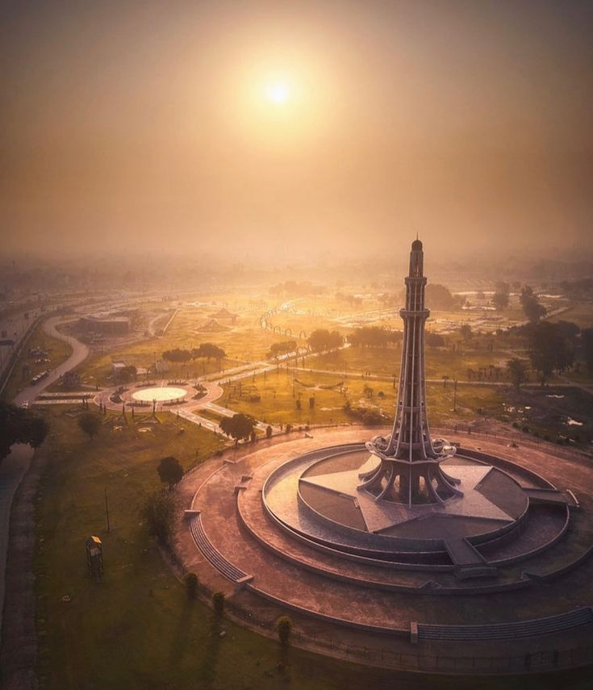
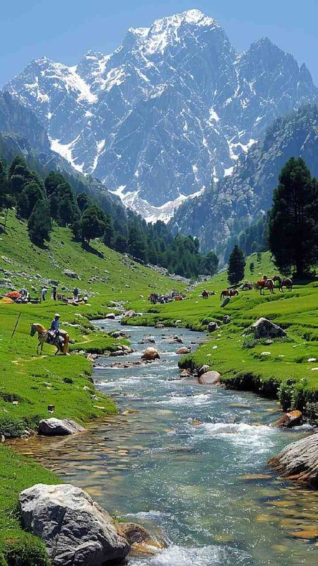

Four Provinces
Choose Your Region
Each province carries its own landscape, language, and legacy.

Click to ExplorePunjab
Land of five rivers, Mughal grandeur, and the soulful streets of Lahore and Gujranwala.
 Click to Explore
Click to Explore
Sindh
Cradle of the Indus civilization — from Karachi's electric coast to ancient ruins.

Click to ExploreKPK
Towering peaks, emerald valleys, and timeless heritage along the ancient Silk Road.
 Click to Explore
Click to Explore
Balochistan
Pakistan's largest province — vast deserts, dramatic coastlines, and ancient beauty.